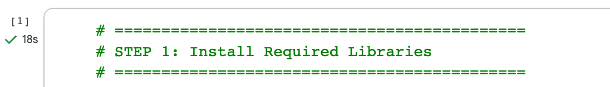
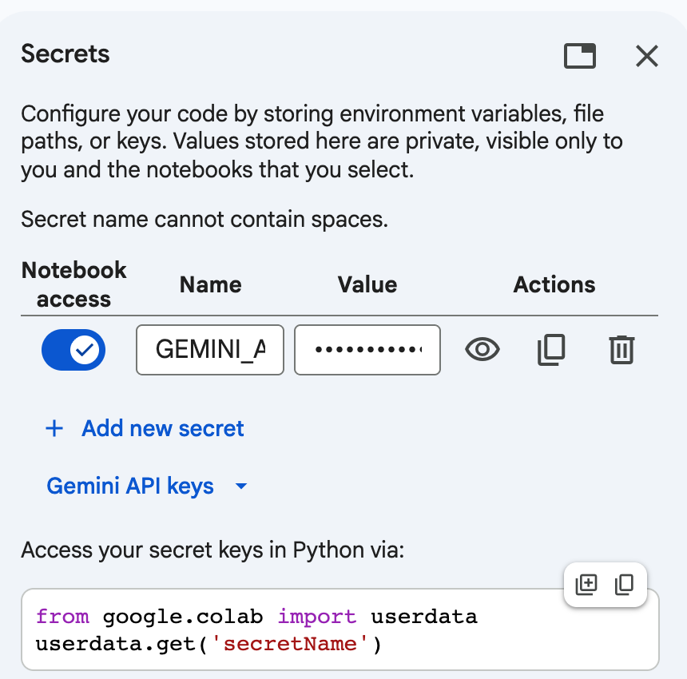
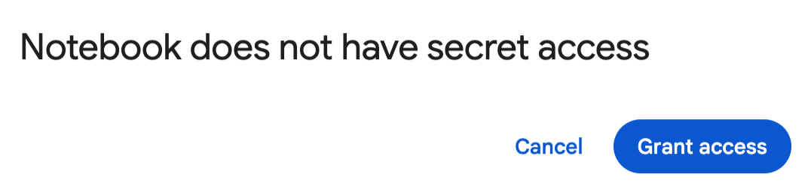
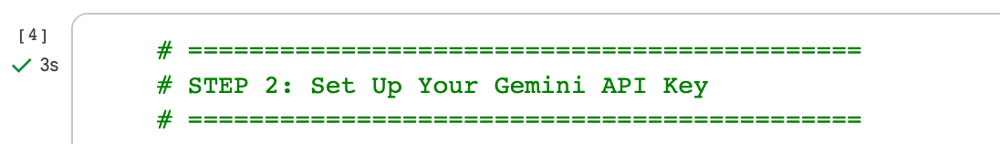
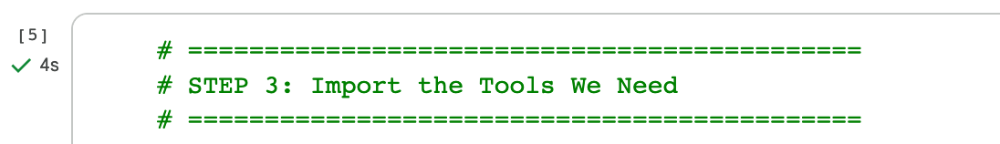
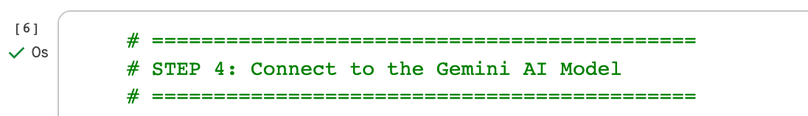
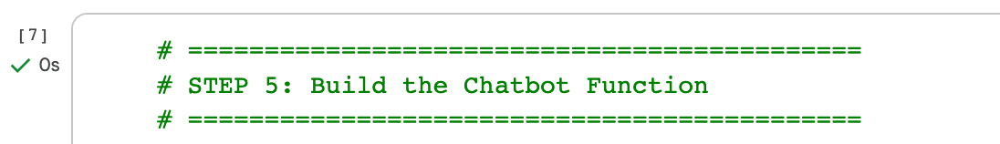
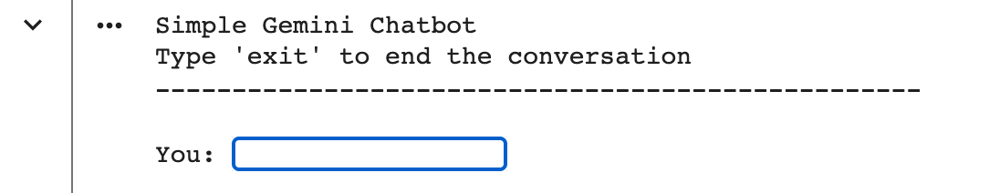
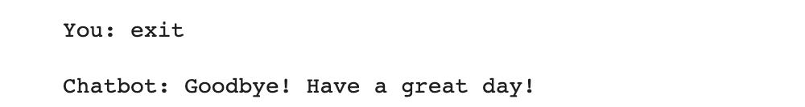

In this section, we'll set up a simple chatbot using LlamaIndex + Gemini.
All the code discussed in this section is available in this Colab file:
#), such as # STEP 1.Step 1: Install Required Libraries: Before we start coding, we need to install the necessary libraries. Press Run on the cell that starts with # STEP 1:
# ============================================# STEP 1: Install Required Libraries# ============================================## WHAT WE'RE DOING:# Installing the tools (libraries) we need to build our chatbot.# Think of this like downloading apps before you can use them.## WHY THIS MATTERS:# LlamaIndex helps AI find and use information from documents.# Gemini is Google's AI model that will power our chatbot's responses.## WHAT YOU'LL SEE:# A bunch of download progress bars — that's normal! Wait until it finishes.# ============================================!pip install -q llama-index==0.14.25 llama-index-llms-google-genai==0.11.3!pip install -q nest_asyncioWhat this code does:
!pip install downloads a library into your Colab session. The ! sends the line to Colab's command line instead of to Python.==0.14.25 and ==0.11.3 pick exact versions, the ones this notebook was tested with.-q means quiet: pip prints only errors, not every download.nest_asyncio is a small helper library that Step 3 switches on.What you'll see in Colab:

(opens the picture full size in a new tab)A green tick appears next to the cell, and nothing prints under it. That's expected, because -q keeps pip quiet. In our run the cell took about 18 seconds.
Seeing red "ERROR: pip's dependency resolver…" lines? If they mention google-adk, opentelemetry or jedi, you can ignore them. Those are tools Colab preinstalls that this notebook doesn't use. Keep going. If a later cell fails with an ImportError, choose Runtime → Restart session, then run all cells again.
Step 2: Set Up API Keys: To use Gemini, we need to set up an API key.
API stands for Application Programming Interface: the door one program uses to talk to another. Here, your notebook talks to Gemini through Google's API.
Click Dashboard in the left menu, then API Keys, then Create API key.
Here is a full demo:
Keep the AI Studio tab open until the key is saved in Colab Secrets on the next slides. Paste it only into Secrets, never into a code cell.
Store your key in Colab Secrets. Your API key works like a password, so it never goes in a code cell. When you share your notebook, anyone with the link can read every code cell, including a pasted key. Colab Secrets keeps the key with your Google account instead of inside the notebook.
GEMINI_API_KEY exactly as written.When it's done, the Secrets panel looks like this:

(opens the picture full size in a new tab)Run the cell below. Your notebook can now use the key without it ever appearing in your code. Press Run on the cell that starts with # STEP 2:
# ============================================# STEP 2: Set Up Your Gemini API Key# ============================================## WHAT WE'RE DOING:# Giving our program the "password" (API key) it needs to talk to Google's Gemini AI.## WHY THIS MATTERS:# Without an API key, Gemini won't respond to our requests.# It's like needing a library card before you can borrow books.## WHAT YOU'LL SEE:# No output — that's expected! The key is saved silently.## TROUBLESHOOTING:# - If you get "API key not valid" later, double-check your key at# https://aistudio.google.com/app/apikey# - Make sure there are no extra spaces in your key# ============================================import osfrom google.colab import userdata# Reads your key from Colab Secrets (the key icon in the left sidebar).# Never paste your key into a code cell.os.environ["GOOGLE_API_KEY"] = userdata.get('GEMINI_API_KEY')What this code does:
userdata.get('GEMINI_API_KEY') reads your key from Colab Secrets.os.environ["GOOGLE_API_KEY"] = ... saves it where the Gemini library looks for a key.If you didn't turn on Notebook access, Colab asks first whether your notebook may read the secret GEMINI_API_KEY:

(opens the picture full size in a new tab)Click Grant access. (If you click Cancel, the cell stops with NotebookAccessError.)
What you'll see in Colab:

(opens the picture full size in a new tab)No output, just a green tick. That's expected! The key is saved silently.
os.environ["GOOGLE_API_KEY"] now holds: your key, ready for Gemini in Step 4.
Never share your API key publicly! If you accidentally expose it, revoke it immediately and generate a new one.
Already shared a notebook with your key in it? Go to Google AI Studio, delete that key, and create a new one. Then save the new key in Secrets.
To revoke a key means to switch it off so it stops working. Anyone who copied the old key can't use it any more.
Create a Simple Chatbot. Now, let's initialize the chatbot using LlamaIndex + Gemini. Press Run on the cell that starts with # STEP 3:
# ============================================# STEP 3: Import the Tools We Need# ============================================## WHAT WE'RE DOING:# Loading the specific parts of LlamaIndex we'll use — the Gemini# connection and the chat message format.## WHY THIS MATTERS:# Python needs you to explicitly load each tool before using it,# like pulling specific tools out of a toolbox.## WHAT YOU'LL SEE:# No output — imports are silent unless there's an error.# If you see "ModuleNotFoundError", go back and re-run Step 1.# ============================================from llama_index.llms.google_genai import GoogleGenAIfrom llama_index.core.llms import ChatMessageimport nest_asyncionest_asyncio.apply()What this code does:
GoogleGenAI is LlamaIndex's connection to Gemini.ChatMessage holds one message in the chat, with who said it (role) and what they said (content).nest_asyncio.apply() lets LlamaIndex's chat calls run inside Colab's notebook.What you'll see in Colab:

(opens the picture full size in a new tab)No output, just a green tick: the imports worked. If you see ModuleNotFoundError, go back and run STEP 1 again.
Press Run on the cell that starts with # STEP 4:
# ============================================# STEP 4: Connect to the Gemini AI Model# ============================================## WHAT WE'RE DOING:# Creating a connection to Google's Gemini 3.5 Flash-Lite model.# This is the AI "brain" that will generate our chatbot's responses.## WHY THIS MATTERS:# Gemini Flash is fast and free — perfect for learning and experimenting.# In a real company, you might use a more powerful (and expensive) model.## WHAT YOU'LL SEE:# No output — the model is ready and waiting for questions.# ============================================llm = GoogleGenAI(model="gemini-3.5-flash-lite")What this code does:
GoogleGenAI(model="gemini-3.5-flash-lite") picks the Gemini model that will answer. It uses the key you saved in Step 2.llm is short for large language model, the kind of AI behind chatbots.What you'll see in Colab:

(opens the picture full size in a new tab)No output, just a green tick. The model is ready and waiting for questions.
llm now holds: the connection to Gemini 3.5 Flash-Lite.
Press Run on the cell that starts with # STEP 5. Here is the top of the cell:
# ============================================# STEP 5: Build the Chatbot Function# ============================================## WHAT WE'RE DOING:# Creating the main chatbot — a loop that takes your questions,# sends them to Gemini, and prints the AI's response.## WHY THIS MATTERS:# This is the core of any chatbot! The conversation history (messages list)# lets the AI remember what you talked about earlier in the conversation.## WHAT YOU'LL SEE:# Nothing yet — we're just defining the function. We'll run it in the next step.# ============================================def simple_chatbot(): """ A simple interactive chatbot using Gemini with LlamaIndex. """ print("Simple Gemini Chatbot") print("Type 'exit' to end the conversation") print("-" * 50) # Initialize chat history — this stores the conversation so far messages = []What this code does:
def simple_chatbot(): defines a function (a named block of code you can run later). Nothing runs yet.messages = [] starts an empty list. It will hold the whole chat, so Gemini can see what you talked about earlier.Here's the middle of the same cell:
while True: # Get user input user_input = input("\nYou: ") # Check for exit command if user_input.lower() in ["exit", "quit", "bye"]: print("\nChatbot: Goodbye! Have a great day!") break # Handle empty input if not user_input.strip(): print("(Please type a question, or type 'exit' to quit.)") continueWhat this code does:
while True: repeats until break. Each time, input() waits for you to type a question.exit, quit or bye ends the chat. An empty line asks you to type again.And here's the end of the same cell:
# Add user message to history messages.append(ChatMessage(role="user", content=user_input)) try: # Send the full conversation to Gemini and get a response response = llm.chat(messages) # Print the response print(f"\nChatbot: {response.message.content}") # Add assistant response to history so it remembers this exchange messages.append(ChatMessage(role="assistant", content=response.message.content)) except Exception as e: print(f"\nError: {e}") print("Please try again or check your API key")What this code does:
llm.chat(messages) sends the whole chat to Gemini. Its answer is printed and added to the list.try and except catch any error, print it and keep the chat going.What you'll see in Colab:

(opens the picture full size in a new tab)Nothing yet. We're just defining the function. We'll run it in the next step.
simple_chatbot now holds: the chatbot, ready to start in Step 6.
Step 6: Run Your Chatbot. Run the script in Google Colab. Press Run on the cell that starts with # STEP 6:
# ============================================# STEP 6: Run Your Chatbot!# ============================================## WHAT WE'RE DOING:# Starting the chatbot so you can have a conversation with Gemini.## WHY THIS MATTERS:# This is the moment of truth — you're running your first AI chatbot!## WHAT YOU'LL SEE:# A "You: " prompt where you can type questions.# Type any question and press Enter to get a response.# Type "exit" to stop the chatbot.## TRY THESE QUESTIONS:# - "What is artificial intelligence?"# - "Explain RAG in simple terms"# - "What is a pharmaceutical SDF document?"# ============================================if __name__ == "__main__": simple_chatbot()What this code does:
simple_chatbot() starts the function you built in Step 5.if __name__ == "__main__": just means "run this when the cell runs".What you'll see in Colab:

(opens the picture full size in a new tab)Ask the chatbot any question and see how it responds! Click in the box after You:, type your question and press Enter. Need an idea? The notebook suggests these questions:
While the chatbot waits for you, the cell keeps running. That's normal: it stops when you type exit.
We typed What is RAG?. Here is the start of the answer Gemini gave in our run:
Chatbot: **RAG** stands for **Retrieval-Augmented Generation**.
It is an artificial intelligence technique used to improve the accuracy, reliability, and relevance of Large Language Models (LLMs) like GPT-4 by fetching facts from an external knowledge base before generating a response.The answer went on with a step-by-step list. Gemini writes a new answer every time, so yours will be worded differently. The stars (**RAG**) are Gemini's way of marking bold text.
After the answer, a new You: box appears, so you can ask a follow-up question.
Type exit and press Enter to stop the chatbot.
What you'll see in Colab:

(opens the picture full size in a new tab)The cell stops, and a green tick appears next to it. To chat again, run the STEP 6 cell again.